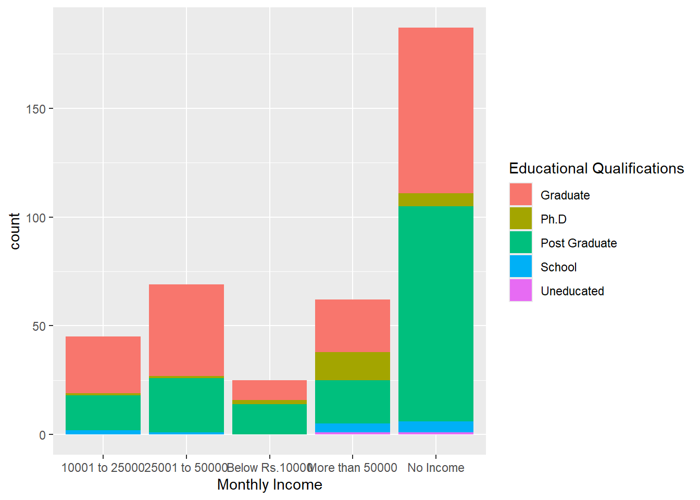
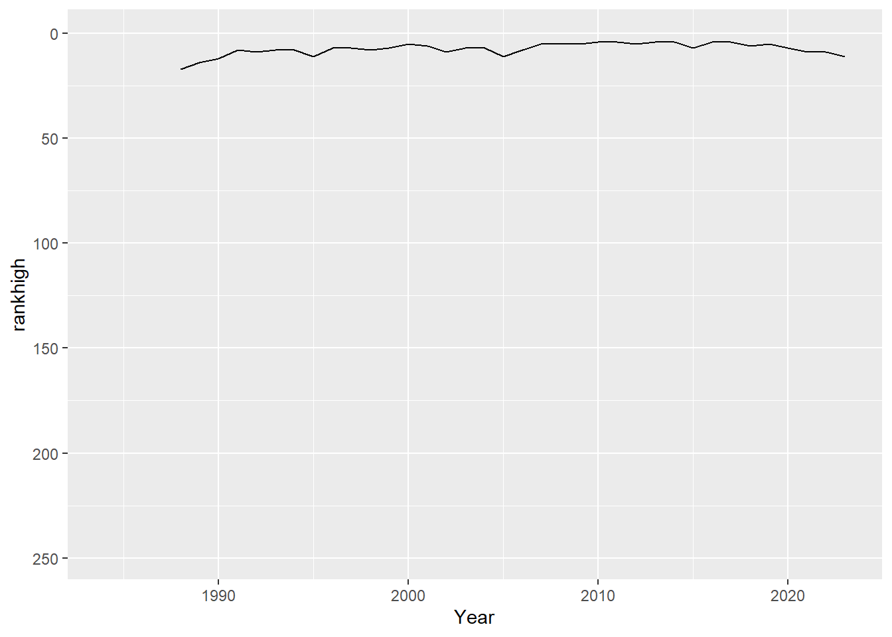

Chapter 11 Shiny Apps
It is wise to plan out the data and visualizations for a Shiny App in a normal R script. Once you’re satisfied with the data and visualization approaches, transfer them into an app. The app should be self-contained in its own folder for easy transfer to shinyapps.io.
Load packages
11.1 Strange online food data
Create an initial app in an exploration folder.
It’s from Kaggle! Load it in…
## New names:
## Rows: 388 Columns: 13
## ── Column specification
## ───────────────────────────────────────────── Delimiter: "," chr
## (8): Gender, Marital Status, Occupation, Monthly Income, Educational
## Qua... dbl (5): Age, Family size, latitude, longitude, Pin code
## ℹ Use `spec()` to retrieve the full column specification for this
## data. ℹ Specify the column types or set `show_col_types = FALSE` to
## quiet this message.
## • `` -> `...13`Make a bar graph of income and education

11.2 Liberal arts college rankings
Let’s build a more serious app of Liberal Arts Colleges U.S. News rankings in our liberalarts folder.
We can geocode with the tidygeocoder package.
examplePlaces <- data.frame(
location = c("Middlebury College", "Williams College"))
examplePlacesCoded <- examplePlaces |>
geocode(location)## Passing 2 addresses to the Nominatim single address geocoder## Query completed in: 2 seconds## # A tibble: 2 × 3
## location lat long
## <chr> <dbl> <dbl>
## 1 Middlebury College 44.0 -73.2
## 2 Williams College 42.7 -73.2We can geocode addresses composed of college names and their states.
Geocoding takes some time, and often requires an API with a software-as-service subscription.
college_data <- read_csv(here("apps", "liberalarts", "usnews.csv"))
college_data_with_locations <- college_data |>
mutate(location = paste0(`College Name`, ", ", State)) |>
geocode(address = location)Always save geocoding results as a data object and immediately save as a data file. You don’t want to repeat geocoding if at all possible.
Load geocoded results
Did everything geocode?
## # A tibble: 27 × 44
## `College Name` State `IPEDS ID` `2023` `2022` `2021` `2020` `2019` `2018`
## <chr> <chr> <dbl> <chr> <chr> <chr> <chr> <chr> <chr>
## 1 Franklin and Mars… PA 212577 39 42 43 38 36 39
## 2 Sewanee-Universit… TN 221519 51 50 47 43 49 41
## 3 Washington and Je… PA 216667 94 92 96 92 103 106
## 4 Concordia College… MN 173300 145 141 130 132 127 117
## 5 Ava Maria Univers… FL 442295 T2 (1… T2 (1… T2 (1… T2 (1… T2 (1… <NA>
## 6 University of Pue… PR 243151 T2 (1… T2 (1… 166 <NA> <NA> <NA>
## 7 Albert Magnus Col… CT 128498 <NA> <NA> <NA> <NA> <NA> <NA>
## 8 Albertson College ID 142294 <NA> <NA> <NA> <NA> <NA> <NA>
## 9 Borromeo College … OH 203368 <NA> <NA> <NA> <NA> <NA> <NA>
## 10 Carson-Newman Col… TN 219806 <NA> <NA> <NA> <NA> <NA> <NA>
## # ℹ 17 more rows
## # ℹ 35 more variables: `2017` <chr>, `2016` <dbl>, `2015` <dbl>, `2014` <chr>,
## # `2013` <chr>, `2012` <chr>, `2011` <dbl>, `2010` <dbl>, `2009` <dbl>,
## # `2008` <chr>, `2007` <chr>, `2006` <chr>, `2005` <chr>, `2004` <chr>,
## # `2003` <chr>, `2002` <dbl>, `2001` <chr>, `2000` <chr>, `1999` <chr>,
## # `1998` <chr>, `1997` <chr>, `1996` <chr>, `1995` <chr>, `1994` <chr>,
## # `1993` <chr>, `1992` <chr>, `1991` <chr>, `1990` <dbl>, `1989` <dbl>, …Apparently not! For example, OSM has Franklin & Marshall College with an ampersand, and it does not find the college with an “and”.
Moving on anyway…
11.2.2 Graph college ranking over time
Let’s build a graph of college ranking over time. As usual, we’ll have to do some data wrangling first, including converting text to numbers and pivoting. While converting text, we need to decide what to do with tied rankings.
college_ranks <- college_data_with_locations |>
select(-State, -`IPEDS ID`, -lat, -long, -location) |>
mutate_all(as.character) |>
pivot_longer(-`College Name`,
names_to = "Year",
values_to = "Ranking") |>
filter(!is.na(Ranking), Ranking != "?") |>
mutate(rankhigh = case_when(str_detect(Ranking, "\\(") ~ str_extract(Ranking, "(?<=\\()[:digit:]+"),
.default = Ranking),
ranklow = case_when(str_detect(Ranking, "\\(") ~ str_extract(Ranking, "(?<=-)[:digit:]+"),
.default = Ranking),
rankhigh = as.numeric(rankhigh),
ranklow = as.numeric(ranklow),
Year = as.numeric(Year))
college_ranks |> saveRDS(here("apps", "liberalarts", "collegeRanks.RDS"))Filter ranks for a single college
selected_college_data <- college_ranks |>
filter(`College Name` == "Middlebury College")
selected_college_data## # A tibble: 36 × 5
## `College Name` Year Ranking rankhigh ranklow
## <chr> <dbl> <chr> <dbl> <dbl>
## 1 Middlebury College 2023 11 11 11
## 2 Middlebury College 2022 9 9 9
## 3 Middlebury College 2021 9 9 9
## 4 Middlebury College 2020 7 7 7
## 5 Middlebury College 2019 5 5 5
## 6 Middlebury College 2018 6 6 6
## 7 Middlebury College 2017 4 4 4
## 8 Middlebury College 2016 4 4 4
## 9 Middlebury College 2015 7 7 7
## 10 Middlebury College 2014 4 4 4
## # ℹ 26 more rowsNow graph the ranks for a single college over time. Notice how the x and y axis limits are set based on the whole dataset, not just the single college.
selected_college_data |>
ggplot() +
geom_line(aes(x = Year, y = rankhigh)) +
geom_line(aes(x = Year, y = ranklow)) +
ylim(c(max(college_ranks$ranklow), 1)) +
xlim(c(min(college_ranks$Year), max(college_ranks$Year))) ### Revisit map to show colleges with ranking data
## # A tibble: 356 × 2
## `College Name` n
## <chr> <int>
## 1 Wheaton College 64
## 2 St. John's College 59
## 3 Westminster College 48
## 4 Amherst College 38
## 5 Carleton College 38
## 6 Haverford College 38
## 7 Oberlin College and Conservatory 38
## 8 Pomona College 38
## 9 Swarthmore College 38
## 10 Wellesley College 38
## # ℹ 346 more rowsJoin number of rankings to college data